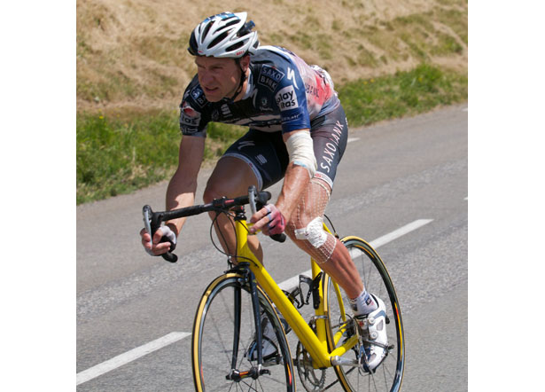

The hard as nails Jens Voigt talking about his crash yesterday, via bigringriding:
JENS WRITING ON BICYCLING.COM FROM HIS HOSPITAL BED. WHAT AN AWESOME GUY.
That stage pretty much got off on the wrong foot. For starters, we just went out so hard. We started out climbing up the Peyresourde Pass and everybody came out with their guns smoking.
I came over the top only 20 seconds down on the front group, but about 2 kilometers into the descent my front tire blew and I thought, “Oh God,” and I went down. Just one year after my horrible crash, and there I was tumbling on another mountain descent. And let me tell you, about the only place that feels good right now is my right ankle. The rest of me is all road rash. Plus I’ve got five stitches in my left elbow and then there are some ribs that are not in the right place! I may have to get x-rays, but I hate x-rays (the radiation), and plus, if I’ve got a fractured rib, what can anyone do about it?
The worst thing of all was that I almost got forced out of the Tour for a second year in a row. The problem was that the first team car was behind Andy Schleck, and the second had decided to go up ahead to hand out water bottles at the foot of the next climb. As a result I had no bike, because mine was shattered.
So then the broom wagon pulled up and was like, “Do you want to just get in?” And I said, “Oh no, I don’t need YOU!” But there I am with blood spurting out my left elbow and no bike. Finally, the race organizers got me a bike, but it was this little yellow junior bike. It was way too small for me and even had old-fashioned toe-clip pedals. But that is the only way I could get down the mountain, so I had to ride it for like 15-20 kilometers until I finally got to a team car with my bike.
Then, I still had to get up to the grupetto. All I can say is that that desperate times need desperate measures, but I got up there. And once I did it was grupetto all day long.
Needless to say, I had plenty of time to come up with a fitting book of the day. It’s from the Disk World series by Terry Pratchett. In it, the protagonist is Conan the Barbarian, who is a 70-year-old who has just survived everything. At one point he, and his other old warrior friends capture this village, but then they find that they are surrounded by an army of tens of thousands, and his only reaction is, “Oh man, it’s going to take days to kill all these people!” And that’s the way I was today when I was lying on the ground. I just thought, “Oh no, I’m going to Paris this year, I’m going to Paris. There’s just no way you are going to get me out of this race for the second year in a row!”
Also an awesome YouTube video of his interview after the race.
New York Jews modernising their religion and self expression.
Spain: Pass, pass, pass, pass, pass, pass, pass, pass, pass, pass, pass, pass, pass, pass, pass, pass, pass, pass, pass, pass, pass, pass, pass, pass, pass, pass, pass, pass, pass, pass, pass, pass, pass, pass, pass, pass, backheel, pass, pass, pass, pass, Alonso scuffed shot, goalkick. Pass, pass, pass, pass, pass, pass, pass, pass, pass, Villa charges at Dutch right back, throw in, pass, pass, pass, pass, pass, Alonso scuffed shot, deflected, corner, goalkick. Pass, pass, pass, pass, pass, pass, pass, pass, pass, pass.
Holland: Chase, chase, chase, chase, chase, chase, chase, chase, chase, chase, foul by van Bommel, freekick, no card. Chase, chase, chase, chase, chase, chase, chase, chase, dive by Arjen Robben, angry look by van Persie as no freekick given, chase, chase, chase, chase, chase, chase, chase, chase, chase, chase, watch Alonso shot sail wide, goalkick, aerial challenge for ball, dive by Arjen Robben, angry look by van Persie as no freekick given, chase, chase, chase, chase, chase, chase, chase.
”Pretty sure Tumblr’s directory listing isn’t supposed to look like this (Safari 5).
Inspired by Josh’s post, I’ve decided to list (and give a shout out to) the services on the web that I pay for.
Finally, I’d like to mention Dropbox. As a service I think Dropbox is absolutely best of breed—it’s hands down the smoothest, slickest, and most tightly integrated web/desktop hybrid I’ve ever used. I don’t actually pay for it as I don’t have a requirement for their lowest plan yet, but if I did I’d pay it without thinking. Fantastic service (I have a referral link, too), cannot recommend it highly enough. I wish MobileMe was as slick as Dropbox.
Sir Patrick Moore graciously reviewing various types of space–related snacks.
The Milky Way and surrounding halo of the Big Bang as seen by the Planck telescope. Amazing.
German football team truly multi-cultural
I’m over the moon about stereotype breaking articles like this. Football truly is a world sport.
So I’ve moved my old blog over to Tumblr’s excellent free service.
One of the main reasons is that I hadn’t updated my other site since March, and before that I’d posted a mere 12 times.
I felt weighed down by the usual length of my posts, and whilst this was likely an issue and expectation only I had, it was demotivating.
Of course, the length issue could be solved by just posting shorting missives to my site, but the custom software I’d written wasn’t very supportive of that kind of post, and given my fairly busy day job at Smarkets I was unwilling to spend any time adding features. Tumblr, on the other hand, is perfect for multi–medium and multi–form posts.
I also had existing experience skinning Amanda’s own Tumblr, so I know I can customise it fairly easily.
So with that out of the way, here we are. I hope to post more, but in lesser form, in the future.